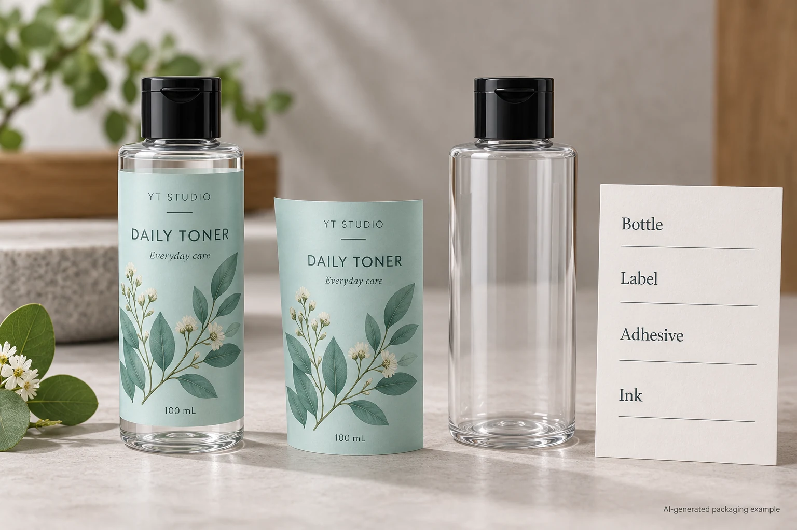
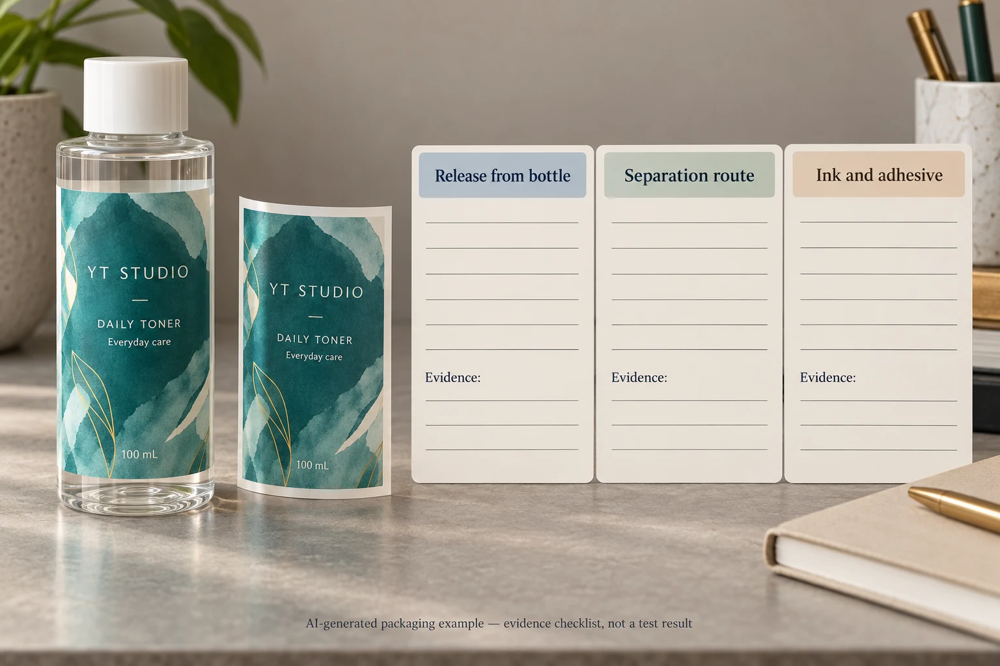

A label proposal for a PET toner bottle includes a wash-off adhesive. That is a useful technical reference to investigate. It still leaves several connected questions: does the label separate from the PET in the intended process, where does the separated material go, and what happens to the ink and adhesive during that operation?
Ask for evidence on the complete proposed construction and the identified PET recovery route. Keep release, physical separation and contamination-related behaviour as distinct entries. A label lifting in a hand wash or a film floating by itself does not establish all of those outcomes for the printed, adhesive-coated label on your bottle.

Start with the actual PET pack
Identify the bottle material, colour, coating or decoration and other attached components. Obtain the label face, adhesive, printed ink, protective finish and applied coverage references. The material proposed in the quotation and the construction described in supporting evidence should be traceable to each other.
Do not infer that a clear bottle is PET from its appearance. Obtain the container supplier's specification. A component material change can alter the assessment route even if the pack keeps its shape. If the project has changed from another resin, ask the technical reviewer which prior evidence remains useful.
The existing HDPE recycling review explains evidence and environmental-claim scope for that packaging context. The narrower task here is to understand the separation questions in a proposed PET recovery process. It is not a recommendation to move every bottle to PET or a universal recycling instruction.
Follow the proposed route through three questions
First ask about release from the PET. Supplier technology may be designed to deactivate an adhesive in a defined wash process. Ask which construction and conditions the statement covers. A promise of easy consumer removal and a result in an industrial recycling wash describe different operations.
Second ask about separation after release. Avery Dennison's PET packaging overview describes a technology route in which released label material floats while PET flakes sink. Its relevance is the proposed separation mechanism, not an assurance that every film label behaves that way. Ask whether the finished label, with print, adhesive and any protective layer, is represented by the supplied evidence.
Third ask about what remains or transfers. APR's PET design resources discuss adhesive remaining on PET or redepositing during washing, and the relevance of ink behaviour. A label coming off visibly is not the same observation as an acceptable recovered PET stream. Have the technical party identify the relevant current assessment and its scope.
Do not turn a desk demonstration into a process result
A converter may show a label removed from a bottle in a small container of water. It can illustrate a question and make a sample easier to discuss. Unless it follows the applicable defined method and represents the required conditions, it should not be described as an accepted recycling assessment.
Likewise, placing a loose unprinted film in water leaves out its adhesive, ink, coating and attachment to PET. The demonstration does not answer whether the actual construction detaches appropriately, separates in the intended route or avoids unwanted contamination. Ask for the evidence needed for those decisions rather than adding a favourable caption to a sample photograph.
This guide gives no wash temperature, chemical concentration or duration to reproduce. Such conditions belong to the applicable protocol and competent assessment party. Improvising a harsher wash can change the question instead of making the evidence stronger.
Use a separation-evidence worksheet
| Process question | Evidence to obtain | What remains open without it |
|---|---|---|
| What enters the process? | Identified bottle, full label construction and relevant attached components | Whether the assessment represents the proposed pack |
| How does the label release? | Current method, conditions and result for the adhesive/construction | Whether a wash-off description applies to this route |
| Where does released material go? | Separation behaviour of the representative finished label | Whether a loose face-film demonstration transfers to the full label |
| What happens to adhesive and ink? | Relevant assessment of residues, redeposition and colour transfer | Whether visible release alone misses another recovery concern |
| What is the assessment scope? | Protocol version, sample identity, report/recognition and limitations | Whether the cited evidence supports this combination |
| Who accepts the conclusion? | Brand and technical review owners, intended market and proposed wording | Whether a technical result has been used beyond its remit |

Complete the incoming-construction row first. Then ask the material or assessment party to connect each relevant result to that same construction. If a result comes from a related product, mark the difference and have the technical reviewer resolve its significance. A similar trade name should not silently bridge the gap.
Hold an unsupported compatibility or environmental statement if the evidence cannot be connected to the proposed pack. That does not prevent ordinary layout discussion or a quotation with the open requirement identified. It prevents a technical assumption from becoming an unqualified production claim.
Compare the right alternatives
One hypothetical project has documented evidence for its exact label construction in an identified recovery route. Its next task is to preserve that construction reference and agree what changes reopen the review. A different project has only a PET bottle specification and a generic film brochure. It can request a supported alternative or a suitable assessment before adopting a compatibility statement.
A smaller label area, another face material or a different adhesive may be proposed during that discussion. Ask what each change is intended to solve and which other functions need review: information space, appearance, adhesion and application still matter. No single material name resolves the complete purchasing decision.
Also separate technical design compatibility from collection and sorting in a consumer's location. Keep US, GB, CA and AU market questions distinct. A report concerning a defined technical route is not, by itself, a disposal instruction valid everywhere or permission to use an environmental mark.
For cosmetic bottle labels, provide the PET bottle reference, label coverage, artwork and quantity per design, plus the intended markets and the exact compatibility question. Ask which documented construction options are currently available for assessment; do not assume that another supplier's named technology is supplied by YT Labels.
Use the inquiry form to prepare a message. Send specifications and assessment references separately by email or WhatsApp; the form does not upload attachments. Agree what the evidence supports before converting a promising label proposal into a claim about the entire pack.
Sources: Avery Dennison PET packaging overview describes its separation technology. APR PET design resources discuss adhesive and ink behaviour in PET recovery, with the source's own packaging scope. Neither source certifies the illustrated pack or establishes universal local recyclability.